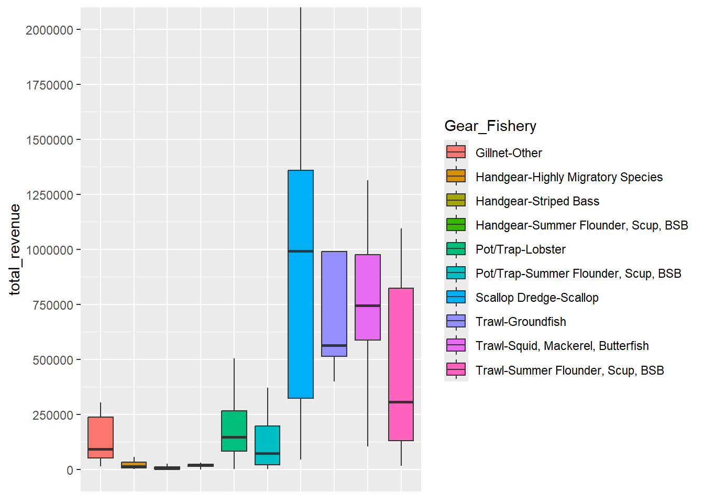
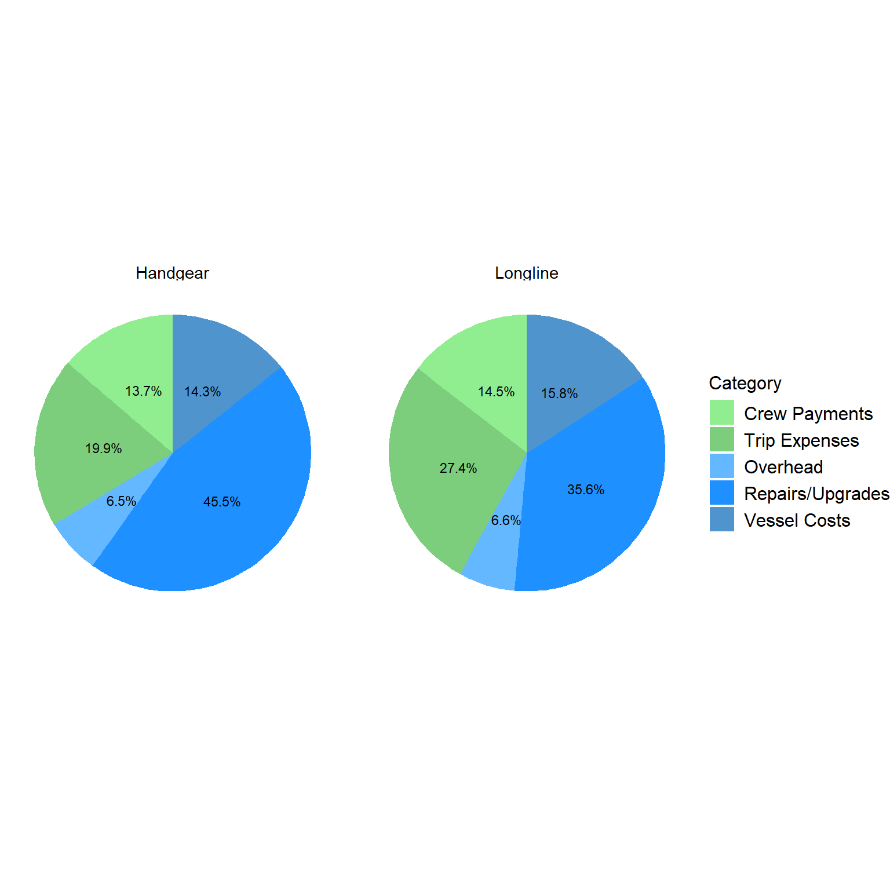

7 Operating Profit
| Gear | Observations | Sampled | Response_Perc | Mean | Median | St.Dev |
|---|---|---|---|---|---|---|
| Dredge_Scallop | 29 | 219 | 13 % | $ 528,494 | $ 496,487 | $ 445,621 |
| Gillnet | 10 | 89 | 11 % | $ 40,318 | $ 22,337 | $ 72,891 |
| Handgear | 59 | 356 | 17 % | $ 6,837 | $ 2,536 | $ 58,744 |
| Longline | 4 | 23 | 17 % | $ 131,331 | $ 135,674 | $ 186,141 |
| Pot/Trap | 160 | 1345 | 12 % | $ 91,876 | $ 58,795 | $ 158,034 |
| Seine | 3 | 19 | 16 % | $ 656,754 | $ 274,049 | $ 880,844 |
| Trawl | 29 | 188 | 15 % | $ 367,073 | $ 265,336 | $ 445,661 |

| Fishery | Observations | Sampled | Response_Perc | Mean | Median | St.Dev |
|---|---|---|---|---|---|---|
| Dogfish | 3 | 25 | 12 % | $ -1,882 | $ 18,446 | $ 40,927 |
| Fluke, BSB, Scup | 23 | 136 | 17 % | $ 134,987 | $ 12,567 | $ 237,657 |
| Groundfish | 7 | 52 | 13 % | $ 438,165 | $ 203,192 | $ 558,260 |
| Herring | 4 | 5 | 80 % | $ 306,647 | $ 355,763 | $ 203,910 |
| Highly Migratory Species | 34 | 193 | 18 % | $ 23,052 | $ 968 | $ 100,784 |
| Lobster | 152 | 1272 | 12 % | $ 88,573 | $ 61,500 | $ 148,683 |
| Monkfish | 3 | 19 | 16 % | $ -4,947 | $ -12,870 | $ 21,863 |
| Other | 17 | 140 | 12 % | $ 139,069 | $ 2,592 | $ 445,727 |
| Scallop | 28 | 229 | 12 % | $ 550,482 | $ 525,741 | $ 437,484 |
| Squid, Mackerel, Butterfish | 9 | 59 | 15 % | $ 471,288 | $ 321,619 | $ 534,144 |
| Striped Bass | 12 | 66 | 18 % | $ 10,618 | $ 4,353 | $ 25,286 |

| Gear_Fishery | Observations | Sampled | Response_Perc | Mean | Median | St.Dev |
|---|---|---|---|---|---|---|
| Dredge_Scallop-Scallop | 28 | 216 | 13 % | $ 550,482 | $ 525,741 | $ 437,484 |
| Gillnet-Monkfish | 3 | 19 | 16 % | $ -4,947 | $ -12,870 | $ 21,863 |
| Gillnet-Other | 7 | 70 | 10 % | $ 59,718 | $ 26,404 | $ 79,666 |
| Handgear-Fluke, BSB, Scup | 8 | 56 | 14 % | $ 9,299 | $ 8,169 | $ 23,319 |
| Handgear-Highly Migratory Species | 31 | 181 | 17 % | $ 8,932 | $ 636 | $ 77,070 |
| Handgear-Other | 10 | 63 | 16 % | $ 2,183 | $ 4,375 | $ 43,803 |
| Handgear-Striped Bass | 10 | 56 | 18 % | $ 3,027 | $ 1,615 | $ 6,089 |
| Longline-Highly Migratory Species | 3 | 8 | 38 % | $ 168,960 | $ 252,903 | $ 208,512 |
| Pot/Trap-Fluke, BSB, Scup | 6 | 23 | 26 % | $ 90,529 | $ 37,125 | $ 119,821 |
| Pot/Trap-Lobster | 150 | 1265 | 12 % | $ 88,165 | $ 60,196 | $ 149,485 |
| Pot/Trap-Other | 4 | 57 | 7 % | $ 233,043 | $ 62,355 | $ 403,270 |
| Trawl-Fluke, BSB, Scup | 9 | 57 | 16 % | $ 276,347 | $ 91,373 | $ 325,750 |
| Trawl-Groundfish | 5 | 41 | 12 % | $ 578,955 | $ 270,521 | $ 615,811 |
| Trawl-Other | 7 | 38 | 18 % | $ 146,971 | $ 61,430 | $ 226,213 |
| Trawl-Squid, Mackerel, Butterfish | 8 | 52 | 15 % | $ 529,303 | $ 322,467 | $ 539,860 |
By primary gear, scallop dredge has considerably higher median operating profit than other gear groups. Seine has the highest mean operating profit, noting the value represents only three vessels. Trawl has the third highest mean and median values, followed by longline, pot/trap, gillnet, and handgear. For most gear types, mean values greatly exceed median values, indicating skewness in the distribution to the right. The boxplots emphasize the range of operating profit by gear group with the box extending past $750K for scallop dredge and ~$500k for trawl. Gillnet and pot/trap extend considerably less and handgear is close to $0. A small number of observations exhibit negative operating profit, which generally is viewed as the short-term shutdown point in which continuing operations is no longer economically viable. These observations are likely explained in part by other vessel uses outside of commercial fishing. For example, if a vessel is used for leisure activities, the vessel owner may have listed the costs of vessel maintenance and upkeep for activities which do not generate revenue. These vessels tend to belong to the handgear and pot/trap gear groups.
By FMP, scallop has higher mean and median operating profit than all other fisheries. Squid, mackerel, butterfish has the second highest mean values, while herring has the second highest median values. Groundfish has the third highest mean values. For a number of fisheries, mean values greatly exceed median values, indicating skewness in the distribution to the right. For scallop, the difference between mean and median values is relatively small. The boxplots emphasize the range of operating profit by gear group with the box extending past $750K for scallop and close to $500k for groundfish, herring, and squid, mackerel, butterfish. Lobster extends to ~100k and other fisheries are close to $0. A small number of observations exhibit negative operating profit, which generally is viewed as the shutdown point in which continuing operations is no longer economically viable. These observations are likely explained in part by other vessel uses outside of commercial fishing. For example, if a vessel is used for leisure activities, the vessel owner may have listed the costs of vessel maintenance and upkeep for activities which do not generate revenue. Many of these vessels belong to the Highly Migratory Species fishery.
When primary gear and FMP are combined, trawl-groundfish has the highest mean operating profit, while scallop dredge-scallop has the highest median value. Within primary gear types, a considerable difference in operating profit is found across fisheries. For example, the mean value for squid trawl vessels is roughly twice that for fluke, black sea bass, and scup trawl vessels. Within the pot/trap gear group, summer flounder, black sea bass, scup vessels have a higher mean value than for lobster but a lower median value. A small number of observations exhibit negative operating profit, which generally is viewed as the shutdown point in which continuing operations is no longer economically viable. These observations are likely explained in part by other vessel uses outside of commercial fishing. For example, if a vessel is used for leisure activities, the vessel owner may have listed the costs of vessel maintenance and upkeep for activities which do not generate revenue.